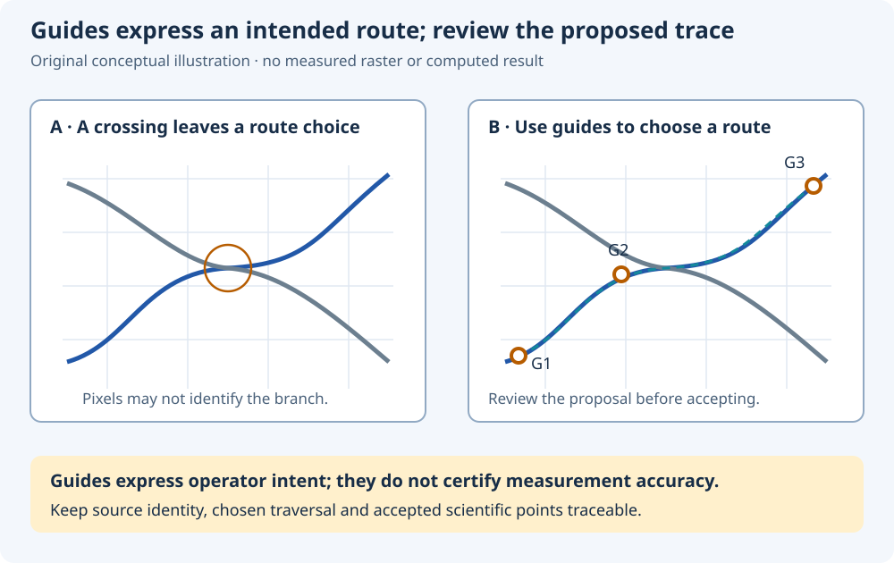

Curve Digitizer 2.0.9 · reference · review draft
A plausible path still needs your scientific judgment
A raster can contain crossings, grid lines, printed labels, dashed segments and faint edges. Guided tracing helps express a route through those pixels. Review the route before treating its accepted points as a scientific curve.
Use guides to express the intended trace
At an indistinguishable crossing, pixels alone may not establish which branch belongs to a curve. A visually smooth continuation can still follow the wrong branch. Source context and deliberate operator guidance matter.

Choose a destination curve and a traversal, then place guides that make the intended branch clear around bends, crossings and obstructions. A guide is a source-raster constraint expressing that choice. Its presence does not prove the source is legible or the physical measurement accurate.
Inspect the image used for proposing the trace. A processed preview can emphasize a faint line, but it may also emphasize a grid or suppress a real edge. Keep the original source and its geometry traceable. A stale processed preview must not silently stand in for the current source and filter settings.
Separate a proposal from accepted scientific points
| Material | Role | Review question |
|---|---|---|
| Guide locations | Operator-selected constraints on the intended source-raster route. | Do their sequence and positions describe the curve you mean? |
| Unaccepted proposal | A suggested path to inspect and correct before acceptance. | Does it follow the source at crossings, labels, corners and faint segments? |
| Accepted scientific points | Points committed to the curve and interpreted through its calibration. | Do their original pixel positions, scientific coordinates and point order remain correct? |
Review a proposed path interval by interval. Corrections to a provisional guide or segment and edits to already accepted scientific points have different consequences. The current operational controls are source-confirmed against deposited dev110/unchanged2.0.9; their actual tutorial GUI execution remains pending.
Rejecting an unaccepted proposal or clearing transient guides must not be confused with deleting previously accepted curve points. Likewise, accepting one interval does not imply that every other proposed interval has been accepted. Preserve already committed work when reviewing the remaining path.
Output density is a sampling choice. More accepted points can describe a reviewed raster route more densely, but they do not create new independent physical measurements. When manual points or previously accepted intervals already exist, the curve's total count can exceed the number added by a later acceptance operation.
Output points (Accept) accepts 0 to retain proposal sampling, or 2…10000. A positive N is the number of newly assisted scientific points for that acceptance, not total curve size including manual/unrelated points. Accept segment applies N to that selected interval; Accept across selected/remaining intervals applies N to that acceptance, accounting for shared guide junctions. There must be enough points to retain the selected guides.
If changing density after partial acceptance, use Resample accepted before accepting another interval. It distributes N across exactly this live proposal’s already accepted intervals and replaces their accepted points, including direct edits to points in that batch. Manual points and unrelated batches remain. Read the confirmation; Undo restores the replaced scientific batch. Transient proposal/accepted-segment bookkeeping is not promised after a configuration or Session switch.
Make traversal order an explicit scientific choice
Open Configuration → Viewer settings… → Digitizing. Monotonicity offers None, Monotonic in X and Monotonic in Y; Point ordering source offers Insertion order, Sort by X and Sort by Y. Selecting a monotonic axis selects its matching sort. Changing to an incompatible ordering clears monotonicity. Press the bottom Apply and inspect the saved status before closing: unapplied selections are not persisted. These scientific choices belong to the current configuration, not shared User/Session defaults. Sorts are stable, so equal coordinates retain their previous relative order. Publication orders separately under every selected calibration. Sorting X does not establish monotonic Y or correct branch identification.
A curve is an ordered sequence. A loop or a path that returns toward a lower X cannot be reconstructed reliably by sorting its X values. Preserve insertion order when that is the intended traversal.
The documented coordinate-ordering policies deliberately change that sequence. Sorting by calibrated X or Y is distinct from declaring a curve monotonic in that coordinate. A curve ordered by X can still rise and fall in Y. Repeated coordinate values also need stable ordering.
Under an explicitly selected coordinate-ordering policy, inserting or moving points and accepting a trace can change their positions in the sequence. For a combined multi-calibration result, interpret the ordering within each curve and calibration realization. A readable curve label or family parameter does not replace those grouping identities.
Zoom and pan change the screen view. Source-raster guide and point positions retain their image-coordinate meaning. Review corrections against the intended original pixel positions and current calibration rather than inferring scientific motion from a changed viewport.
Keep visual evidence and uncertainty distinct
A local snapping radius describes a search neighborhood. A tracing corridor bounds a proposed search. A visible ink width describes the raster's appearance. None alone specifies the probability distribution of a curve centerline or supplies a standard measurement uncertainty.
Ambiguity marks and local image-cost or contrast diagnostics can identify places to inspect. They are not a calibrated probability of correctness. Smoothness also does not establish accuracy: an apparently clean path may have crossed to a neighboring trace or suppressed a genuine sharp feature.
If the source cannot distinguish the intended continuation, record the limitation and preserve the original evidence. Do not accept an uncertain branch solely to obtain a complete-looking curve. After deliberate acceptance and publication, inspect the actual Dataset and source-linked Preview, including grouping, point order and available diagnostics.
The final hands-on tutorials will perform these steps through the real unchanged vendor GUI, retain actual identities and results, and receive TUTORIAL1 scientific/visual review. This page supplies explanatory content only.